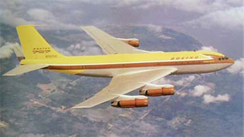

Boeing 707

- Разработчик: Boeing
- Страна: США
- Первый полет: 1954
- Тип: Дальнемагистральный пассажирский самолет
Boeing 707 — это американский реактивный четырёхдвигательный пассажирский самолёт, спроектированный в начале 1950-х годов. Это один из первых реактивных пассажирских лайнеров в мире, наряду с британским DH-106 Comet, советским Ту-104 и французским Sud Aviation Caravelle.
Первый полёт опытный самолёт 367-80 совершил 15 июля 1954 года, а первый полёт опытного серийного 707-120 состоялся 20 декабря 1954 года. С 1958 по 1991 год было произведено 1010 единиц Boeing 707 различных компоновок и модификаций. Коммерческая эксплуатация 707-120 началась в авиакомпании Pan American World Airways 26 октября 1958 года.
На базе Boeing 707 и KC-135 были созданы их разнообразные гражданские и военные модификации: заправщики, разведчики, разведчики погоды, самолёты для научных исследований, самолёты ДРЛО, воздушные командные пункты управления и связи со стратегическими ядерными силами.
| Летно технические характеристики | |
|---|---|
| Модификация | Boeing 707-120 |
| Размах крыла максимальный, м | 44.20 |
| Длина, м | 46.61 |
| Высота, м | 12.93 |
| Площадь крыла, м2 | 283.35 |
| Масса, кг | |
| - пустого самолета | 66406 |
| - нормальная взлетная | 151318 |
| Тип двигателя | 4 ТВД Pratt Whitney JT3D-7 |
| Тяга, кН | 4 х 8618 |
| Максимальная скорость, км/ч | 1009 |
| Практическая дальность, км | 9262 |
| Практический потолок, м | 11890 |
| Экипаж, чел | 3 |
| Полезная нагрузка: | 14 пассажиров в первом классе и 133 в туристическом; он был сертифицирован и для перевозки 219 пассажиров в экономическом классе |